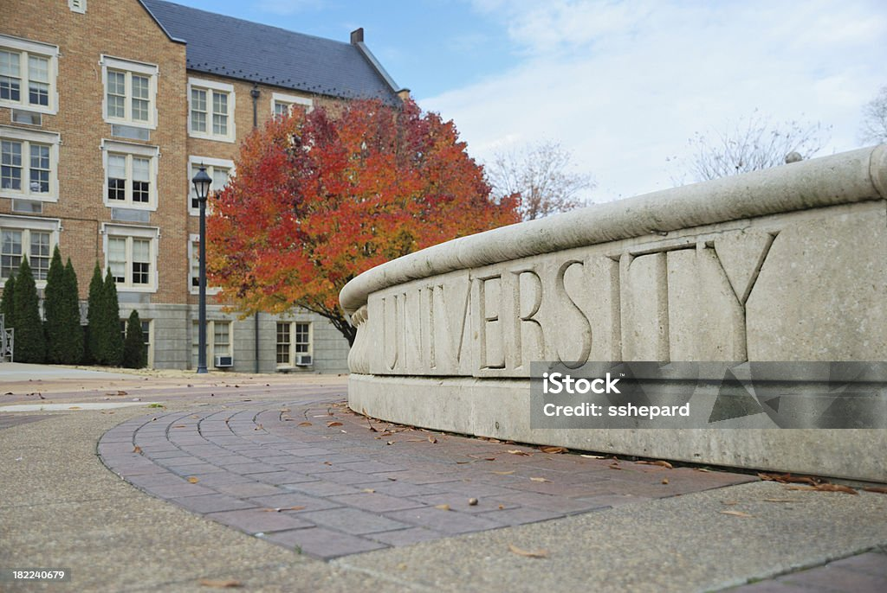

Welcome to St. Mary University
St. Mary University is committed to providing world-class education, fostering innovation, research, and all-round development of students.
Our Vision & Mission
Vision
To be a leading center of excellence in education, fostering innovation, research, and holistic development of students for a sustainable and progressive society.
Mission
- Provide high-quality education with modern infrastructure and technology.
- Encourage research, critical thinking, and innovation among students and faculty.
- Promote ethical values, social responsibility, and leadership skills.
- Prepare students for global challenges and industry-ready careers.
Our Campus
